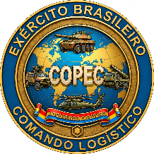
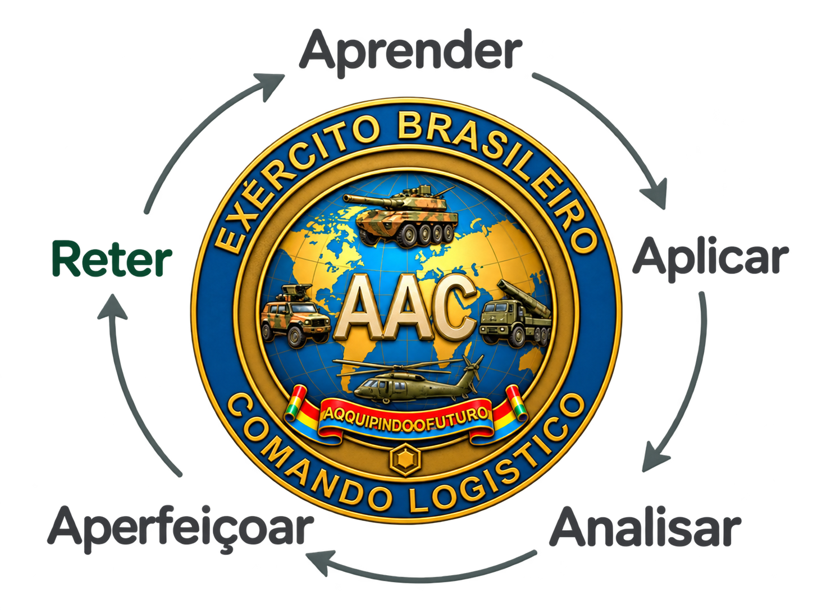

Padronização insuficiente
Variações procedimentais, processuais e normativas entre aquisições.
 COLOG-AAC
COLOG-AAC
COMANDO LOGÍSTICO
ASSESSORIA DE AQUISIÇÕES COMPLEXAS · AAC
PROPOSTA DE CRIAÇÃO DA
COMISSÃO DE OBTENÇÃO DE PRODUTOS ESTRATÉGICOS COMPLEXOS
(COPEC)

INTRODUÇÃO
Da assessoria técnica a uma estrutura executiva permanente, diretamente ligada ao Comandante Logístico e responsável pela continuidade dos processos de obtenção complexa.

O histórico das aquisições e os limites do modelo atual.
BLOCO 1 · O DIAGNÓSTICO
Os processos das aquisições de MEM/SMEM complexos eram conduzidas separadamente pelas Chefias do COLOG, sem fluxo transversal ou banco comum de lições aprendidas.


O aprendizado permanece em cada aquisição e não se consolida como conhecimento do COLOG.
Variações procedimentais, processuais e normativas entre aquisições.
Experiências acumuladas sem retenção sistemática para os processos seguintes.
Fragilidades de instrução e de rastreabilidade das decisões.
BLOCO 1 · O GARGALO HISTÓRICO
As Chefias concentravam a preparação dos projetos; o Centro de Obtenções do Exército atuava sobretudo nos ajustes normativos, processuais e procedimentais.
Estruturação do projeto e concentração das tarefas de aquisição.
Ajustes em processos já modelados, com participação limitada nas regras do negócio e na modelagem técnica, orçamentária e financeira.
Menor disponibilidade das Chefias para a gestão logística de suprimento e manutenção.
Riscos, finanças, logística, offset e precificação precisam ser tratados em conjunto ao longo do processo.
TRÊS LIMITAÇÕES A SUPERAR
Integração insuficiente das dimensões técnicas e contratuais da obtenção.
Instalações inadequadas para comportar o efetivo demandado.
Escassez de militares especializados e necessidade de capacitação permanente.
A experiência da AAC, a capacitação e a articulação institucional.
BLOCO 2 · O EMBRIÃO TÉCNICO
A reunião de especialistas dedicados aos sistemas complexos inicia a correção da fragmentação e aproxima planejamento, assessoramento e gerenciamento.
Estrutura atual da AAC.
Um dos quatro Oficiais Superiores ainda aguarda apresentação.
Apoio ao Comandante Logístico na condução das obtenções complexas.
Economicidade, eficiência e sustentabilidade orientam a preparação do processo.
Conexão entre obtenção, produção, suporte logístico e contratos de compensação.
CINCO PILARES DE ATUAÇÃO
Selecione um pilar para explorar sua contribuição.
Estruturar estudos e necessidades para fundamentar a escolha da solução e a organização do processo.
Manter a coordenação dos trabalhos, das informações e dos compromissos ao longo da obtenção.
Relacionar a aquisição à operação e ao apoio necessário durante a vida do sistema.
Articular o acompanhamento dos contratos de produção, suporte logístico e compensação.
Consolidar métodos, práticas e lições aprendidas para apoiar as aquisições seguintes.
PORTFÓLIO DE SMEM
Helicóptero Black Hawk e Sistema de Aeronaves Remotamente Pilotadas (SAPR) Categoria 3.
VBC Cav Centauro II BR (8×8) e obuseiro autopropulsado ATMOS 155 mm.
Sistema de Média Altura e Sistema Conjunto de Média/Grande Altura.
VBC Fuz e VBC Carro de Combate (CC).
BLOCO 2 · OS MESTRADOS ESPECÍFICOS
O envio de três oficiais para pós-graduação stricto sensu voltada às aquisições complexas reúne linhas de pesquisa complementares para fortalecer a atuação da AAC.
CEL LAURIA
Análise Multicritério / Tomada de Decisão Multicritério (MCDM) em seleção, julgamento, habilitação e decisões intermediárias.
CEL BRITO
Modelagem completa da aquisição e desenho do ciclo de vida dos processos, do Estudo Técnico Preliminar ao término do contrato.
MAJ JENNIFER
Análise de processos pretéritos do COLOG e de apontamentos dos órgãos de controle, com foco nos riscos em contratos de defesa.
As linhas de pesquisa aproximam método decisório, organização do processo e tratamento dos riscos.
BLOCO 2 · ARTICULAÇÃO E REFERÊNCIA INTERFORÇAS
A liderança por Oficial-General favorece a interlocução com outras Chefias, COEx, Órgãos de Direção Setorial e Órgão de Direção Geral.
LIDERANÇA ESTRATÉGICA
A experiência orçamentário-financeira de um General de Intendência, oriundo da chefia da 6ª SCh/EME, fortalece a articulação institucional e a integração das decisões.
Comissão Coordenadora do Programa Aeronave de Combate, no DCTA.
Continuidade da gestão, da concepção ao encerramento contratual.Institucionalizar uma estrutura dedicada aos SMEM terrestres e aéreos, articulando competências de EPEx, COEx e Chefias.
As cinco propostas em sequência, seguidas da formalização e das instalações.
BLOCO 3 · PROPOSTA 1
A mudança de identidade proposta dá permanência à capacidade técnica e representatividade externa à condução das obtenções estratégicas complexas.
Assessoria de Aquisições Complexas

Comissão de Obtenção de Produtos Estratégicos Complexos
A proposta busca interlocução simétrica com a Base Industrial de Defesa e Segurança, tomando a COPAC como referência de identidade organizacional.
BLOCO 3 · PROPOSTA 2
A estrutura proposta combina Presidência, Vice-Presidência e duas divisões, com cinco núcleos técnicos mobilizados conforme as encomendas.
Selecione um núcleo para conhecer sua contribuição no arranjo proposto.
Articular o planejamento da obtenção, os estudos preliminares e a identificação e o tratamento dos riscos do processo.
Integrar as condições orçamentárias e financeiras, as propostas comerciais e a engenharia financeira da obtenção.
Acompanhar o planejamento logístico e a verificação das entregas de suporte necessárias à transição para as Chefias.
Integrar os acordos de compensação à obtenção e apoiar a análise de preços e dos compromissos assumidos.
Consolidar o acompanhamento dos contratos, as evidências de execução e as informações para a prestação de contas.
Representação funcional da proposta: as divisões integram e apoiam a atuação dos cinco núcleos. O detalhamento de subordinações e atribuições deverá compor o ato de criação.
BLOCO 3 · PROPOSTA 3
A proposta amplia a atuação para cinco fases e estabelece continuidade entre os estudos, as relações comerciais e financeiras, as compensações, a logística e a prestação de contas.
A fase inicial estabelece a necessidade e organiza o Estudo Técnico Preliminar. A COPEC assume a guarda do processo em articulação com o COEx e as Chefias.
As condições de fornecimento e de financiamento são examinadas em conjunto, mantendo a coerência da solução com os recursos e os compromissos previstos.
Os compromissos de compensação acompanham a obtenção e precisam ter suas entregas e resultados demonstrados.
O planejamento do Suporte Logístico Inicial e do Apoio Logístico Integrado conecta o fornecimento à sustentação do sistema.
A guarda do processo alcança a prestação de contas final e a extinção contratual, consolidando entregas, registros e responsabilidades.
A coordenação de riscos, finanças, compensações e logística permanece integrada ao longo das cinco fases.
BLOCO 3 · PROPOSTA 4
A entrega física do sistema não encerra a responsabilidade proposta para a COPEC. O marco de transferência exige a conclusão e o ateste formal do Suporte Logístico Inicial.
Condução e acompanhamento integrado das entregas.
Responsabilidade integral pelo SMEM, conforme a regra proposta.
A conclusão do fornecimento físico, isoladamente, não aciona a transferência integral. A proposta busca impedir que os sistemas cheguem às unidades sem cadeia logística, sobressalentes e manuais homologados.
O marco depende da conclusão e do ateste formal do Suporte Logístico Inicial. A guarda do processo pela COPEC continua até os encerramentos contratuais cabíveis, inclusive quanto a compensações e prestação de contas.
DADOS, INFORMAÇÕES E CONHECIMENTO
Organizar informações sobre a entrega comercial e o SLI para apoiar decisões e demonstrar resultados.
O Suporte Logístico Inicial define o marco de transferência do SMEM. O núcleo de Suporte Logístico Integrado articula o planejamento e o acompanhamento das entregas logísticas.
BLOCO 3 · PROPOSTA 5
O efetivo proposto reúne 1 Oficial-General, 10 Oficiais Superiores, 6 Tenentes e 4 Sargentos, distribuídos entre direção, coordenação, núcleos técnicos e apoio.
Alocação por função: a distribuição dos 21 militares orienta a organização da Comissão e está sujeita à validação institucional do quadro de cargos.
| Função / unidade | Oficial- General | Oficiais Superiores | Tenentes | Sargentos | Total |
|---|---|---|---|---|---|
| Presidência | 1 | — | — | — | 1 |
| Vice-Presidência | — | 1 | — | — | 1 |
| Coordenação e Integração | — | 2 | 1 | — | 3 |
| Planejamento e Riscos | — | 2 | 1 | — | 3 |
| Orçamentário e Financeiro | — | 1 | 1 | — | 2 |
| Suporte Logístico Integrado | — | 1 | 1 | — | 2 |
| Offset e Precificação | — | 1 | 1 | — | 2 |
| Acompanhamento e Controle | — | 1 | 1 | 1 | 3 |
| Administrativa e Apoio | — | 1 | — | 3 | 4 |
| Efetivo total proposto | 1 | 10 | 6 | 4 | 21 |
O efetivo, as instalações e o desenvolvimento profissional precisam acompanhar o escopo atribuído à Comissão.
BLOCO 3 · FORMALIZAÇÃO E INSTALAÇÕES
A criação da COPEC integra o aperfeiçoamento das Instruções Reguladoras de Obtenções Complexas, cuja revisão está entre os trabalhos da AAC.
Aproveitar os trabalhos de aperfeiçoamento das Instruções Reguladoras de Obtenções Complexas.
Inserir capítulo ou seção formal que discipline a Comissão, suas competências e suas relações institucionais.
Padronizar a atuação no Exército e dar continuidade aos registros e ao conhecimento acumulado.
A institucionalização da COPEC exige a aprovação do ato de criação e a definição formal de suas competências e relações com os demais órgãos.
Os efeitos esperados para o COLOG e a capacidade a alcançar.
BLOCO 4 · RESULTADOS ESPERADOS
A estrutura especializada busca melhorar a instrução dos processos, fortalecer a segurança jurídica dos decisores e reduzir o encargo burocrático complexo sobre as Chefias.
SEGURANÇA JURÍDICA
Termos de referência, editais, matrizes e mapas de risco padronizados, com análises multicritério robustas e verificação prévia de conformidade.
DESONERAÇÃO DAS CHEFIAS
Concentrar a condução especializada da obtenção complexa, permitindo maior dedicação das Chefias ao suprimento, à manutenção, à prontidão e ao suporte à Força Terrestre.
O ganho esperado é a redução de fragilidades e o melhor fundamento das decisões; a criação da estrutura, por si só, não elimina riscos ou a atuação dos órgãos de controle.
BLOCO 4 · ESTADO FINAL DESEJADO
A proposta converge para sustentabilidade institucional e financeira, domínio do ciclo de vida e aumento do poder de combate do Exército Brasileiro.
Mais consistência jurídica e financeira na condução de projetos de grande vulto, com pessoas, processos e conhecimento permanentes.
SMEM entregue com suporte logístico efetivo e ganhos tecnológicos de compensação demonstrados.
Agilidade na obtenção e sustentação continuada para apoiar a prontidão operacional nas próximas décadas.
CONCLUSÃO

Uma estrutura dedicada para conectar a necessidade, a obtenção, o apoio logístico e a comprovação dos resultados.
Rever as cinco propostasGuarda do processo. Continuidade da condução e da organização dos registros, desde o acolhimento da demanda até a prestação de contas e o encerramento contratual.
Marco de transferência. Conclusão e ateste formal do Suporte Logístico Inicial como condição para que as Chefias de Material assumam a responsabilidade integral pelo SMEM.
Compensações. Compromissos de offset integrados à obtenção, com acompanhamento das entregas e comprovação dos resultados.
Estrutura por demanda. Direção permanente e mobilização dos núcleos técnicos conforme as necessidades de cada obtenção.